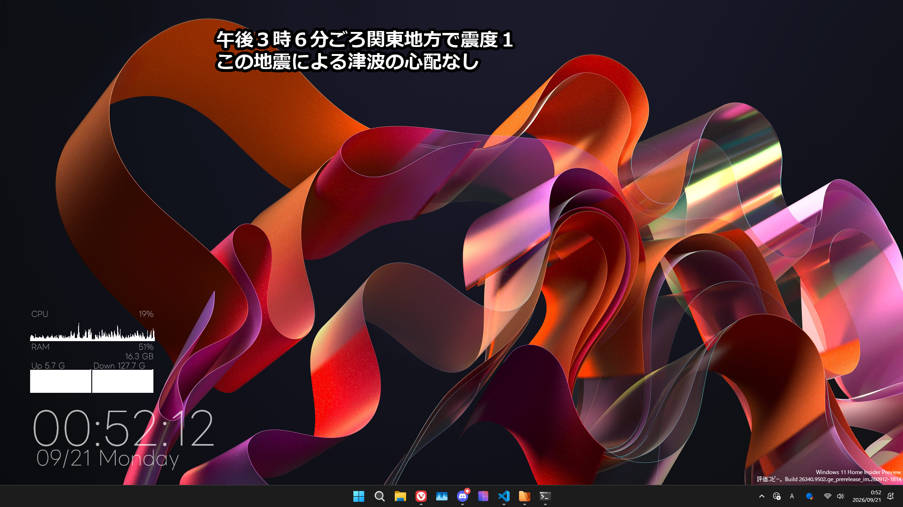
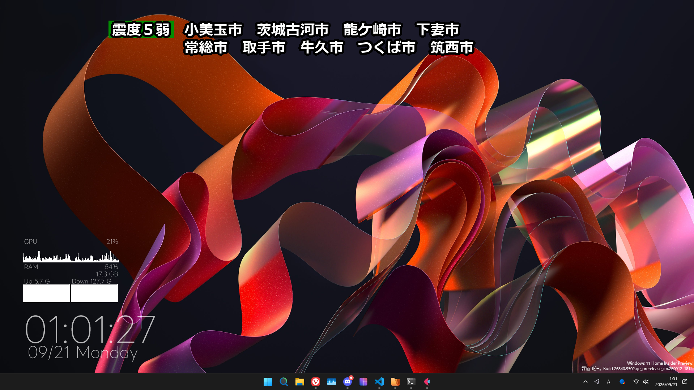
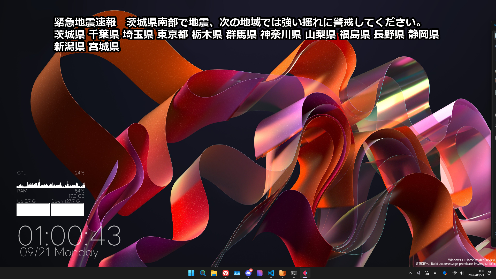

文字スーパーみたいなのをパソコンで表示するやつ
なんかテレビで見たことあるよね。。ね？
あれです。あれをパソコンにオーバーレイするやつです。
真面目に説明すると、P2P地震情報のAPIから緊急地震速報とか震度速報とかを受信して
リアルタイムで表示するソフトです。
動作イメージ

某公共放送みたいなテロップ表示
某公共放送を見てる人ならわかるはず...!
そんなテロップと言い回し
再現ではありません。リスペクトです！
リスペクトならしかたないよね...

やっぱり見覚えあるテロップ
地域ごとの震度情報テロップも...なんか見覚えあるような？
N○Kに似ているような...?

これだけは独自デザイン
地震情報とテロップ技術を共通にさせたかったので...
(地図とかは)ないです

一応、設定変更に対応
GUIを作るのがめんどくさかったんです まあそんなこともある
画像はVSCodeですが、メモ帳とかでもできると思います。設定については利用方法ページをどうぞ
利用しているAPIについて
P2P地震情報APIを利用してデータを受信しています。配信元の状況によってデータが遅延、または届かない可能性があります。テレビや他の防災アプリケーションと併用してご利用ください。
利用に関する注意事項
ソフトの多重起動はサーバーに負荷をかける原因となってしまうため、お控え下さい。(P2P地震情報APIの使用上、IPアドレスあたりの同時接続は2つまでです。)また、今後のアップデートで同時起動を制限する可能性があります。
P2P地震情報APIを利用している他の地震関連アプリケーションと同時に起動した場合、同時接続となりエラーとなってしまう場合があります。その場合はどちらかのソフトを終了することで起動できるようになります。
ダウンロード・利用規約
利用規約
本規約は、もっちー（以下「当方」）が提供するEarthquake-Overlay（以下「本サービス」）の利用条件を定めるものです。本ソフトウェアを利用した時点で、本規約に同意したものとみなします。
完全無保証です。本ソフトウェアは無料のフリーソフトです。動作の保証や、情報の正確性の保証は一切ありません。 お使いのPCに不具合が起きた場合や、地震情報の遅延・誤りによって損害が生じた場合も、当方は一切の責任を負いません。
利用規約を表示
Earthquake-Overlay 利用規約
この利用規約（以下「本規約」）は、もっちー（以下「当方」）が提供するEarthquake-Overlay（以下「本ソフトウェア」）の利用条件を定めるものです。本ソフトウェアをダウンロード、または実行した時点で、本規約に同意したものとみなします。
第1条（定義）
本規約において使用する用語の定義は、次の通りとします。
- 「ユーザー」とは、本ソフトウェアをダウンロード、解凍、または実行したすべての個人または法人をいいます。
- 「地震情報」とは、本ソフトウェアを通じて配信・表示される、地震に関する一切のデータおよび情報をいいます。
第2条（外部APIの利用と免責・アップデート）
- 本ソフトウェアは、地震情報の取得にあたり「P2P地震情報 API」を利用しています。そのため、本ソフトウェア内の地震情報の速報性・正確性・継続性は、同APIおよび配信元に依存します。
- 本ソフトウェアは現状のまま無料で提供されるものであり、当方はバグの修正や動作の完全性を保証しません。
- 本ソフトウェアの利用、または仕様変更や配信障害などにより利用できなかったことによって生じたPCの不具合、データの損失、その他一切の損害（情報の遅延による避難の遅れ等を含む）について、当方およびP2P地震情報API提供者は責任を負いません。実際の防災行動は公的機関の発表に従ってください。
- ユーザーが本ソフトウェアのアップデート（バージョン確認機能を含む）を回避し、旧バージョンを継続して利用した場合、当方は一切のサポートを行わず、情報の配信停止を含めた利用制限措置を予告なく講じることができるものとします。それにより生じた損害についても一切の責任を負いません。
- バージョン確認機能が搭載される前の過去のバージョンを利用する行為は、前項の「バージョン確認機能の回避」とみなして同様に扱い、一切のサポート対象外とします。
第3条（利用の制限と事前許可）
ユーザーは、以下の方法で本ソフトウェアまたはそこから得られる地震情報等を利用する場合、事前に当方の明示的な許可を得なければならないものとします。
- 法人（会社、各種団体、個人事業主を含む）による業務での利用
- YouTube、ニコニコ動画、ツイキャス等の動画配信・生放送プラットフォームでの利用（個人・法人を問わず、画面の映り込みや音声の利用を含む）
第4条（禁止事項およびお願い）
- ユーザーは、以下の行為を行ってはなりません。
- 本ソフトウェアの改造、解析（リバースエンジニアリング、バージョン確認機能の無効化・回避等）
- 本ソフトウェア、または取得した地震データの無断での有償販売・転売
- 当方の許可なく、第3条に定める方法で本ソフトウェアを利用する行為
- 当方、またはP2P地震情報APIのサーバーに過度な負荷をかける行為
- 【お願い：多重起動について】 本ソフトウェアの多重起動（同一PCや環境内での同時複数実行）は、P2P地震情報APIのサーバーへ意図しない負荷をかける原因となります。サーバー保護のため、ユーザーの皆様におかれましては多重起動をお控えいただきますようお願いいたします。
- 【お願い：エラー時の対応について】 本ソフトウェアは個人が開発・運営する無料のフリーソフトです。万が一エラーや不具合が発生した場合は、問い合わせを行う前に、まずは利用方法ページやインターネット等でご自身で原因をお調べいただきますようお願いいたします。
第5条（その他）
- 詳しい利用方法、事前許可の申請窓口、最新の案内については、当方の「利用方法ページ（利用方法ページ）」をご確認ください。
- 本規約の解釈にあたっては、日本法を準拠法とします。
[ 2026年10月1日 制定 ]
exeファイル単体です。Windows専用です。MacOS Linuxでは利用できません。